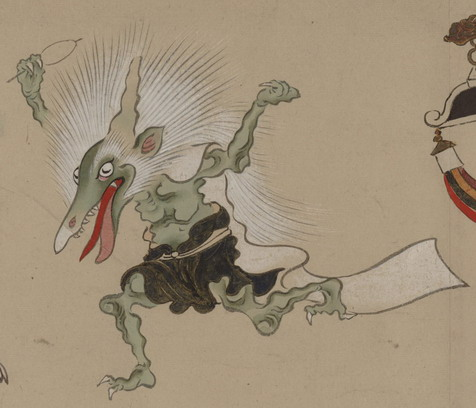

鳥のような顔をした一角の化物。白い頭髪は逆立っており、非常に長い。体は薄緑色で、黒い腰巻を着け、背中から白い布を垂らしている。両腕をあげて、右手に糸巻のようなものを持っている。左手は何も持っていないが、何かをつかむように握りしめている。
出典：親書誌：U426_nichibunken_0154：妖怪絵巻；ヨウカイエマキ／日付：2010／資源識別子：U426_nichibunken_0154_0057_0000
Copyright (c)2010- International Research Center for Japanese Studies, Kyoto, Japan. All rights reserved.